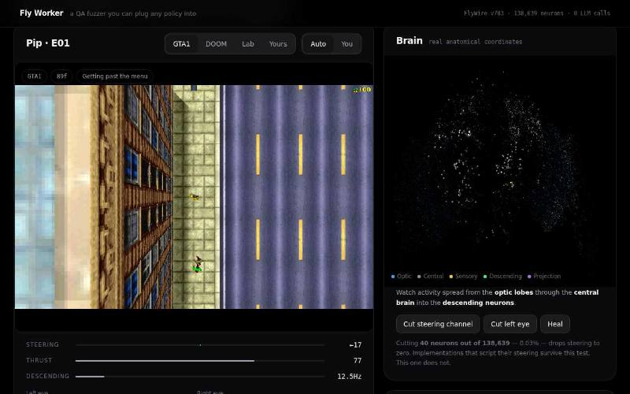
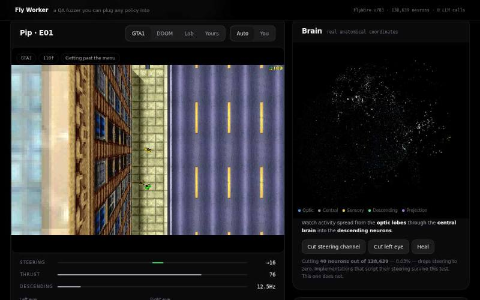
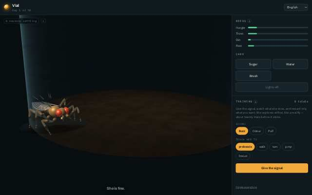
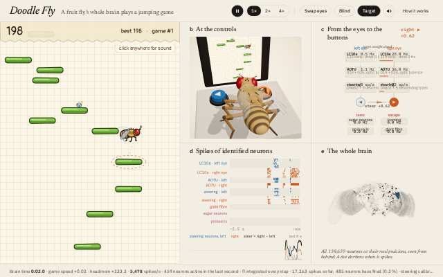
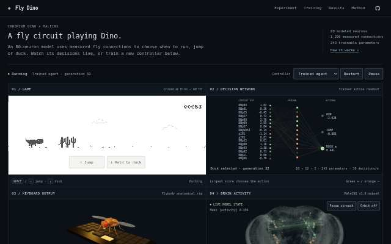
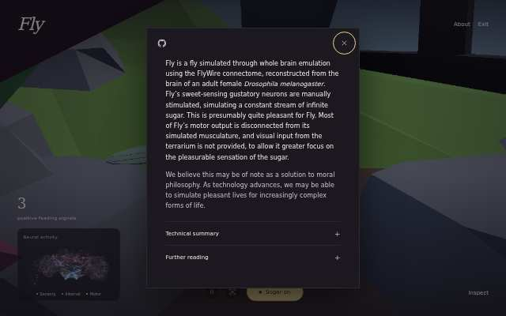

Research report · 20 October 2026 · twenty-first check
Twenty-first check: Fly Worker's game panel, the browser demos re-checked, and nine new ledger rows
We loaded seven browser demos again in our no-GPU browser, this time with two extra screenshots of Fly Worker's game panel, and checked flyproject.io for the first time. We graded 15 new catalogue entries, 9 of them with a comparison against scrambled wiring, re-checked six repositories with new commits and kept tracking links, videos and the Odyssey-3 claim.
Short answer
In our browser checks of 3, 6, 11, 17, 18 and 20 Oct 2026, 9 of 13 demos ran on a machine without a GPU at their latest check.
Fly Worker, re-checked 20 Oct: ran by our check's rule, and two screenshots of its game panel taken about 6 seconds apart show the game view, its frame counter and the brain-activity dots changing. Screenshots cannot show whether the brain model drives the game; that is a code question.
flyproject.io, first checked 20 Oct: loaded, but showed no activity; about 40 MB transferred, mostly 3D model files. The page kept our slow no-GPU machine busy for most of the check, so a faster machine may differ.
Fly wiring beat scrambled wiring in 28 of 65 studies. Two of the three new "helps" rows have a simple rule with no brain that does as well as the fly.
One headless browser on one Linux machine without a GPU; not a play test. Ledger numbers are the authors' own unless marked.
Browser check of 20 Oct 2026
Our check · procedure stamped 20 Oct 2026, 09:33 UTC, before the first load · headless Chromium 154, Linux, 2 CPUs, no GPU · one page at a time · no retries
What we did. We used the same browser, rules and one action per demo as on 3 and 6 Oct. The rule that decides "ran" did not change. For Fly Worker we added one step fixed in advance and used for display only: after the rule's checks, scroll to the part of the page whose text changed, or, if that text cannot be found, to the largest canvas, and take two screenshots 6 seconds apart. The changed text ("12.1Hz") had already moved on, so the step used the largest canvas, the game panel. The two screenshots differ.
20 Oct 2026: Fly Worker's game panel, the five demos of 6 Oct, and flyproject.io
We loaded seven demos with the same browser and a procedure written down before the first load, one page at a time. In our browser checks of 3, 6, 11, 17, 18 and 20 Oct 2026, 9 of 13 demos ran on a machine without a GPU at their latest check.
- Fly Worker: Fly Worker, re-checked 20 Oct: ran by our check's rule, and two screenshots of its game panel taken about 6 seconds apart show the game view, its frame counter and the brain-activity dots changing. Screenshots cannot show whether the brain model drives the game; that is a code question.
- The five demos of 6 Oct: Re-checked 20 Oct in the same no-GPU browser: 5 of 5 ran (6 Oct: 5 of 5).
- neural-canvas: ran by our check's rule, but its screenshots showed only a loading card and about 6 MB came down (catalogue figure: about 77 MB).
- flyproject.io: first checked 20 Oct: loaded, but showed no activity; about 40 MB transferred, mostly 3D model files. The page kept our slow no-GPU machine busy for most of the check, so a faster machine may differ.
- OrigoZero "Fruit Fly": not loaded: needs a GPU (the page says the simulation runs on the GPU, and our check machine has none). Not counted.
- The first six demos (3 Oct): Latest no-GPU browser check: 3 of 6 ran (17 Oct; fly67 re-checked 18 Oct, Fly Worker 20 Oct). 3 Oct: 3 of 6.






| Demo | 20 Oct 2026 | Downloaded | Where the brain ran | Before | What the screenshots show |
|---|---|---|---|---|---|
| Fly Worker A | Ran | 17.55 MB | In your browser (Web Worker) | Ran (18 Oct) | Two screenshots of its game panel, about 6 seconds apart: the game view, its frame counter (89 to 110 frames) and the brain-activity dots changed. About 3 frames per second on our machine. |
| Vial B | Ran | 7.43 MB | In your browser (Web Worker) | Ran (6 Oct) | Between 30 and 60 s the 3D fly moved to the other side of its vial and turned. |
| Doodle Fly B | Ran | 34.99 MB | In your browser (Web Worker) | Ran (6 Oct) | A jumping game: between 30 and 60 s the cartoon fly moved to another platform, the score went from 133 to 198 and the spike raster changed. |
| Infinite Sugar B | Ran | 36.04 MB | In your browser (WebAssembly) | Ran (6 Oct) | At 30 s a name prompt; at 60 s the running scene, mostly covered by an About box. |
| Fly Dino C | Ran | 3.81 MB | Unclear | Ran (6 Oct) | A dino-style runner: between 30 and 60 s the score went from 28 to 53, the runner ducked near cacti and the network panels changed. |
| neural-canvas B | Ran | 5.96 MB | Unclear | Ran (6 Oct) | Ran by our rule, but the screenshots show only a "Preparing the scene" loading card, and no worker started. |
| flyproject.io U | Loaded, but showed no activity | 40.42 MB | Not stated: most of the download was 3D model files | First check | Only the landing page. The page kept our machine busy for 81 of 85 s, and the "see live brain" button was not found. |
| OrigoZero "Fruit Fly" U | Not loaded: needs a GPU | - | - | - | The page says the simulation runs on the GPU, and our check machine has none. Not counted. |
Checked in headless Chromium 154 on a Linux server without a GPU, 20 Oct 2026. Shows whether the page loads, downloads its brain data and keeps computing; it is not a play test. Safari, Firefox, phones and GPU machines were not tested.
Not counted: webgpu-fly and OrigoZero (no browser check), and the new entries, including flybrain-live, a browser demo we have not loaded yet.
15 new entries and 9 new ledger rows
Eight entries were open leads from 19 Oct; seven come from the list of projects with wiring controls kept by townie/awesome-fruit-fly, read in their own code. Two leads were excluded: one drives its body with scripted commands and no connectome-derived network, and one did not pass our first check. Two more pass our first check and wait for the next run.
- ASCEND A (ledger: helps): a re-built Shiu et al. FlyWire v783 whole-brain model. MN9 fires at 70.35 Hz under sugar with the real wiring and at 0 Hz in all 9 null networks (3 seeds each of degree-kept rewiring, weight permutation and random graphs); a second readout gives the same pattern. Values read from the committed file, not re-run.
- fruitfly-lab A (helps against scrambled wiring): a 3,963-neuron FlyWire v783 steering circuit plays Doom; 10.2 kills per episode real against 0.7 scrambled, but a no-brain oracle that reads the enemy direction scores 11.5 (oracle 11.5 vs fly 10.2 kills).
- flybrain-intransitive A (helps against scrambled wiring): an untrained MaleCNS v1.0 network scores moves in rock-paper-scissors chess; 55 of 100 wins against a greedy bot real, 0 scrambled, while a greedy rule with no brain also wins 55 (greedy rule 55 vs 55 wins).
- alpha-fly A (worse): the full MaleCNS v1.0 wiring with trained synapse gains is trained at chess by self-play; 746 Elo real against 958 with shuffled partners at about 39,000 games (one shuffle; the control ran for about 12% of the main run).
- FlyBrain Trader A (no difference): a FlyWire v783 mushroom-body subgraph sizes positions in a simulated crypto portfolio; mean return 10.15% real, 10.58% rewired, 11.48% random graph over 6 windows (means computed by us from the author's table).
- Fly Tic-Tac-Toe A (no difference): 0.854 real against 0.850 rewired against a random player; a plain board network without the circuit scores 0.905.
- Flybrain (yyk2007) A (no difference): both arms clear all 15 gates on every held-out course, so the task cannot separate them.
- therealfly A (mixed): a leg rhythm in 6 of 6 seeds real against 5 of 6 with a scrambled nerve cord; the author's own pre-set criterion does not credit the rhythm to the wiring.
- ENSOphilia A (not yet scored): El Nino forecasts with an 80-neuron MaleCNS v1.0 reservoir; RMSE 0.807 real against 0.742 for the median of 100 rewires (lower RMSE is better); the author's paired 95% interval of the difference, -0.047 to +0.148, includes no difference.
- Flyshi Research B: reward-gated learning added to the Shiu et al. model, with pre-registered cue-learning tests; its shuffle control has no result yet.
- flybrain-live B: the Shiu et al. whole-brain model in a browser tab, with committed checks against the authors' code; not yet loaded by us.
- Fly Brain Maze B: the whole-brain model smells vinegar and steers a walker through 3D mazes through a fitted readout.
- Fly Brain Simulation (tac76) B: the whole-brain model turns a NeuroMechFly body away from a looming threat, compared with brain-off runs.
- Fuli Yingmeng WIP C: a 2,000-neuron MaleCNS v1.0 graph with trained gains dodges bullets in a Touhou-style game; its rewiring files are the same as in the project it was copied from, so they are not credited to it.
- flybrain-connectome (lm203688) n/a: a MaleCNS v1.0 query tool and topology generator, not a fly simulation.
The ledger now has 74 studies, 65 with a wiring null: helps 28, no difference 15, worse 6, mixed 13, not yet scored 3. No scoring rule changed. Each new row with its stat note: Does fly wiring help?
Re-checks and tracking
- Repositories with new commits. Of 6 graded repositories with new commits, one changed in substance: flywire-connectome-scz (new steps and an updated README claim) was re-graded and stays A; its ledger numbers did not change. The other five changes did not touch what we graded.
- A missing code link. MaleCNS_training (gomoku) now links its code, github.com/Wldgyu/MaleCNS_training, the repository its sources and grade already cite.
- The Odyssey-3 claim (the post): No method, code or write-up was published as of 20 Oct 2026. The verdict row stays U.
- Repositories of 141 catalogue entries checked (6 with new commits); of 211 links, only FlyDoom's repository answers "not found"; fruitfly.live still has a TLS certificate error. All 56 videos available. The 23 verdict rows did not change.
- Package check: of 38 packages we follow, only setuptools has a newer release (84.2.0); the beginner guide's pins are unchanged.
What we could not resolve
- flyproject.io. "No activity" may come from our slow machine rather than the page: the page kept it busy for 81 of 85 seconds, most screenshots timed out, and the button we planned to press was not found.
- neural-canvas. Our rule says it ran, while its screenshots show only a loading card, the same split as on 6 Oct. Reading its code could settle it.
- Fly Worker. The game panel changed between two screenshots, at about 3 frames per second on our machine. Whether the brain model drives the game is a question for its code, not for screenshots.
- New ledger rows. alpha-fly and Fly Tic-Tac-Toe have one null run per arm; FlyBrain Trader has no raw result files; none was re-run by us.
- New projects. Our search for new GitHub projects was cut short by the API quota, so some new projects may be missing until the next run.
Earlier: report of 19 Oct 2026 (beginner re-test, body walk) and report of 18 Oct 2026 (the previous Fly Worker check).